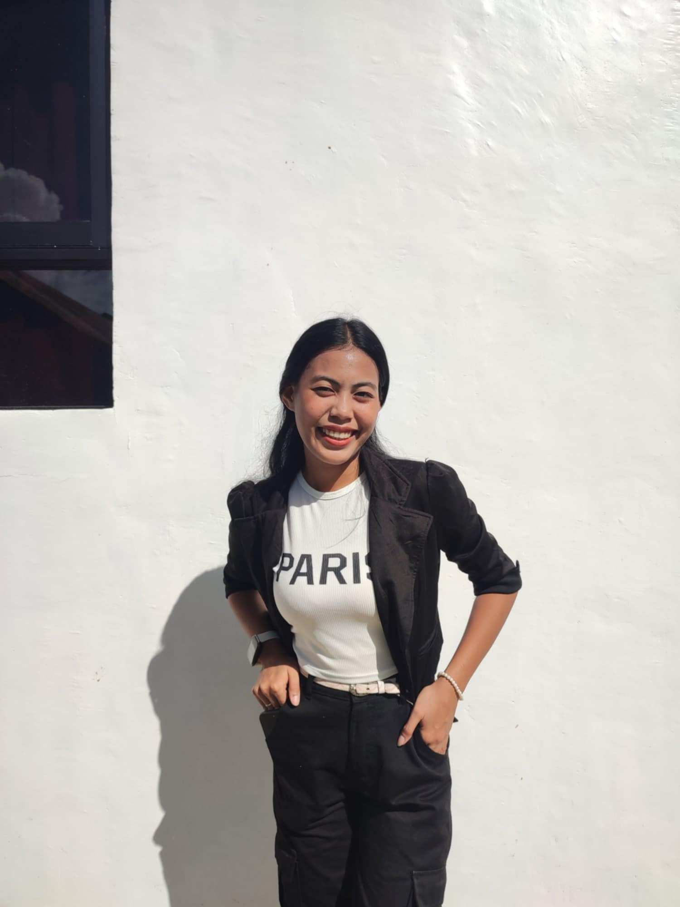

Detail-Oriented
I focus on accuracy and quality in every task.
VIRTUAL ASSISTANT · IT SPECIALIST
I help businesses stay organized, simplify daily operations, and manage information with confidence. From administrative support and online research to data management and digital workflows, I bring a detail-oriented approach and an IT-driven mindset to every task.
Data Entry · Online Research · Administrative Support · IT Support

Cebu City / Remote
ABOUT ME
I'm Mary Cris Inso, a tech-driven Virtual Assistant who values organization, accuracy, and continuous improvement. My background in Information Technology helps me approach everyday tasks with a practical mindset, adapt to digital tools, and find efficient ways to manage information.
I enjoy bringing structure to busy workflows, keeping records organized, conducting detailed online research, and providing dependable administrative support. I believe that even the smallest details make a difference, and I approach every responsibility with care, initiative, and a commitment to quality.
My goal is simple: to make your workload lighter, your processes smoother, and your day-to-day operations more manageable.
I focus on accuracy and quality in every task.
I work to meet deadlines and deliver consistent results.
I adapt quickly to new tools and systems.
I value clear communication and collaboration.
WHAT I CAN DO
I've developed a versatile skill set through my studies and hands-on experience. Here are some of the tools and services I can support.
FEATURED WORK
A showcase of technical workflows and digital development focused on clean design, performance, and structure.
A mobile-first web portfolio designed and coded from scratch using semantic HTML and custom CSS to highlight technical workflows, services, and digital organization capabilities.
Live Demo ↗PROFESSIONAL EXPERIENCE
Practical experience supporting content, data, and quality-checking tasks.
Direct Client · Remote
LET'S CONNECT
I'm open to suitable opportunities, collaborations, and meaningful conversations. Feel free to reach out!